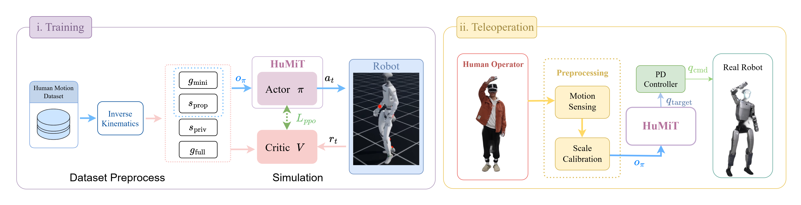

Low-Latency Whole-Body Humanoid Teleoperation via Minimal Reference Tracking
Anonymous Authors
HuMiT is a low-latency whole-body teleoperation system that drives a humanoid from sparse human keypoints alone, letting robots perform reactive and coordinated whole-body skills (ball catching, loco-manipulation) under 20ms end-to-end latency.
Abstract.
Real-time whole-body humanoid teleoperation remains challenging due to the computational latency introduced by optimization-based retargeting pipelines and future-frame anticipation. Existing motion tracking policies typically require dense reference targets including full joint positions, body-part transformations, and even future frames, which tightly couples the controller to expensive upstream modules.
In this work, we present HuMiT, a whole-body teleoperation system built on a unified tracking policy that requires only a minimal reference target—consisting only of root height, root velocity, and sparse keypoint positions at the current frame—yet achieves competitive or superior tracking fidelity compared to methods relying on full reference states.
Experiments show that our policy achieves a communication-to-inference latency of ~20ms and an externally measured end-to-end latency of ~80ms (median), significantly lower than the 200ms+ typical of existing systems.
We validate the system on a Unitree G1 humanoid, showcasing split-second reactive responses such as catching a tossed ball, as well as coordinated loco-manipulation capabilities.
Method.
The central design choice of HuMiT is that π observes only the minimal reference target (MRT) —root height, root linear and angular velocity, and body-part keypoint positions at the current frame in the robot frame—without joint-level references, body-part orientations, or any future-frame information. This reduces the upstream pipeline to two lightweight components:
A motion-sensing module that captures the operator's body keypoints via a VR headset with motion trackers,
A scale-calibration module that maps human keypoint positions to the robot's body positions in closed form, in place of an optimization-based retargeting loop.

System overview. Retargeting and future-frame buffering are removed from the online loop; the Actor tracks the minimal reference, while the Critic uses the full retargeted reference for supervision during training.
Latency Measurement.
To measure end-to-end latency, we record the operator and robot side by side at 50 fps during a repetitive waving motion and match peaks of their dense optical-flow signals.
HuMiT achieves a minimum of 20 ms and a median of 80 ms end-to-end latency—substantially lower than the 200 ms+ delay of future-frame buffering and the 100 ms+ overhead of online IK retargeting—confirming that the minimal-reference design is fast enough for time-critical, coordinated teleoperation.
Side-by-side recording of the operator and the Unitree G1 used for the latency analysis.
Teleoperation Tracking.
Beyond raw latency, the policy must faithfully reproduce the operator's intent in real time. We qualitatively evaluate whole-body tracking by streaming live human motion to the Unitree G1 and observing how closely the robot mirrors arm gestures, locomotion, and coupled upper–lower-body coordination.
Real-time teleoperation tracking on the Unitree G1: the robot follows the operator's whole-body motion driven by the minimal reference target alone.
Reactive Response.
Low end-to-end latency unlocks tasks that demand split-second reactions. We toss a ball toward the operator: the operator reaches out instinctively, and the robot mirrors the motion in real time, catching the ball with its glove. Even moderate teleoperation delays would make this task infeasible.
Coordinated Whole-Body Skills.
Driven by a single unified policy, the operator commands the Unitree G1 through a range of everyday whole-body skills: carrying a water jug, pushing a chair, walking up to and sitting on a chair, and reaching overhead to hang clothes. These behaviors require tight coordination between locomotion and manipulation, which decoupled upper–lower-body controllers struggle to achieve.
Carrying a water jug across the workspace.Pushing a chair while walking.Walking up to a chair and sitting down.Reaching overhead to hang clothes.
Failure Cases.
While HuMiT supports a wide range of whole-body skills, certain behaviors remain challenging. We highlight two representative failure modes below.
Kneeling failed. Kneeling fails due to insufficient training trajectories covering ground-contact motions.Placing failed. Precise placement occasionally fails due to scale mismatch between the human and the robot, reducing fine-grained wrist accuracy.